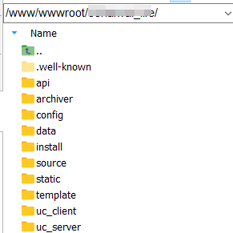

开发—产品框架¶
1. MVC架构¶
1. 什么是MVC架构¶
MVC 是 Model-View-Controller 的缩写，是软件架构中的一种经典分层模式，其核心思想是：将业务逻辑（M）、界面展示（V）与请求控制（C）分离，从而实现代码解耦、职责清晰、易于维护和扩展。
| 层级 | 名称 | 职责说明 |
|---|---|---|
| M（模型） | Model | 数据层：处理数据结构、数据库操作、业务逻辑，如获取用户、帖子、积分 |
| V（视图） | View | 展示层：将数据渲染成前端界面，如 HTML 模板、JS |
| C（控制器） | Controller | 控制层：接收请求，调度模型与视图，如帖子详情逻辑控制、数据分页等 |
2. MVC主要解决的问题¶
| 问题 | MVC 的解决方式 |
|---|---|
| HTML/PHP 混杂、难维护 | 分离 V 与 C，模板与逻辑隔离 |
| 数据调用与控制逻辑耦合 | Model 独立，统一封装数据访问 |
| 页面增改影响全局代码 | Controller 层级分发，模块可独立开发 |
| 团队协作混乱（设计、开发分工） | 前端关注 View，后端关注 M+C |
3. Discuz! 如何体现 MVC 架构设计？¶
Discuz! 虽然不是严格的面向对象 MVC 框架（如 Laravel、Symfony），但它采用了 “文件路径级” 的轻量 MVC 实现，非常适合高性能需求场景。
-
Model：数据层（位于 source/class/、function/）
-
所有数据库操作通过封装的 C::t() 调用数据表类，如：
- 传统函数式操作放在 source/function/function_*.php 中，如：
-
View：视图层（位于 template/）
-
所有前端页面结构使用 .htm 模板文件，如：
- 模板变量通过 template::assign() 或 PHP 渲染注入：
-
支持多语言 {lang xxx}、条件判断 {if}、模板嵌套 {subtemplate} 等语法。
-
Controller：控制器层（位于 source/module/ 或 include/）
-
控制器按模块划分（forum、portal、group 等）：
- 每个入口文件（如 forum.php）解析参数后引入具体控制器：
require libfile('function/forum');
require libfile('forum/viewthread', 'module'); // 加载 viewthread 控制器
- 控制器中负责处理用户请求、调用模型、加载模板：
4. 总结：Discuz! 的 MVC 架构实践特征¶
| 特性 | 实现方式 |
|---|---|
| 控制器路径分发 | forum.php?id=viewthread → source/module/forum/forum_viewthread.php |
| 模型类封装 | source/class/table/table_xxx.php + C::t() 调用 |
| 模板系统 | .htm + {} 语法 + template() 函数 |
| 轻量、文件驱动 | 不使用复杂 OOP，仅用路径、数组、函数组织逻辑 |
| 插件机制 | 插件挂钩点执行自有 C+V 逻辑，不改动核心 |
2. Discuz! 的目录架构¶
| 根目录文件夹 | 根目录文件 |
|---|---|
|  |
1. 根目录各文件夹功能总览¶
| 目录名 | 用途分类 | 功能说明 |
|---|---|---|
| api/ | 接口控制层 | 📌 Discuz! 与外部通信的 API 控制器，如 QQ 登录、UCenter 回调、支付网关等；访问入口为 api.php |
| archiver/ | 纯文本归档 | 📄 提供论坛页面的纯 HTML 快速阅读版本，适合搜索引擎抓取及低流量展示；访问如：/archiver/tid-123.html |
| config/ | 系统配置文件 | 🔧 存放数据库、UCenter 等全局配置文件，主要有 config_global.php 和 config_ucenter.php，安装过程中生成 |
| data/ | 可写运行数据 | 💾 运行期缓存、附件、模板编译结果、日志等全部写入此目录，必须具有写权限 |
| install/ | 安装逻辑入口 | 📦 Discuz! 安装程序目录（含 SQL 和页面），安装完成后应删除或限制访问；首次部署或升级执行此处逻辑 |
| source/ | 核心程序代码 | 🧠 主程序逻辑目录，包含控制器（forum、portal）、类库、插件、函数、语言包等，是 Discuz! 的 MVC 中枢 |
| static/ | 静态资源 | 🎨 存放全局静态文件，如 JS、CSS、默认图片等；模板通过 {STATICURL} 标签引用 |
| template/ | 前端模板 | 🧾 存放风格文件夹，每个目录对应一个模板套件；默认目录为 default/，可在后台切换风格 |
| uc_client/ | UCenter 客户端 | 🔗 与 uc_server 通信的 SDK（提供接口封装），用于登录、注册、同步登出等；供主程序调用 |
| uc_server/ | UCenter 服务端 | 🧩 独立运行的用户中心模块，支持跨站点统一用户认证、通信接口、积分同步、应用管理等 |
关键目录: source/： 逻辑核心目录，结构化清晰:
| 子目录 | 功能 |
|---|---|
| admincp/ | 后台控制器（如 setting、plugin 管理） |
| class/ | 所有核心类库（分页、缓存、表单处理） |
| function/ | 系统函数集合（如 function_core.php 为主入口） |
| include/ | 前台模块调度逻辑入口，如论坛帖子展示逻辑 |
| module/ | 子模块细分控制器，如 module/forum/viewthread.php |
| plugin/ | 插件系统注册与挂载逻辑 |
| language/ | 系统语言包，按模块划分，支持国际化 |
| discuz_version.php | 当前程序版本声明文件 |
data/： 运行期依赖目录（必须可写）
| 子目录 | 说明 |
|---|---|
| attachment/ | 上传的文件与图片 |
| cache/ | 存储全站配置、权限、导航、hook 缓存 |
| template/ | 生成的模板缓存 .tpl.php |
| log/ | 错误日志和任务日志 |
| threadcache/ | 浏览缓存（纯文本），提高帖子响应速度 |
| diy/ | DIY 模块缓存 |
| plugindata/ | 插件缓存与配置数据 |
| install.lock | 安装锁，防止重复安装 |
| update.lock | 升级锁，避免脚本被二次运行 |
| sendmail.lock | 邮件频率限制锁文件 |
config/ 配置目录（初始化关键）
| 文件 | 说明 |
|---|---|
| config_global.php | ✅ 全站全局配置，数据库连接、缓存方式、路径配置、站点名等都在这里（必读） |
| config_ucenter.php | ✅ UCenter 配置文件，包含通信密钥、接口地址 |
| *_default.php 文件 | 📄 默认配置模板，用于初始化生成 config 文件 |
Discuz! 在安装阶段会根据 default 模板生成 config_global.php 与 config_ucenter.php，其中 $_config['db'] 与 $_config['cache'] 是插件开发、性能调优的重点配置对象。
install/ 安装系统目录
| 目录 | 说明 |
|---|---|
| data/ | 安装过程使用的 SQL 模板 |
| include/ | 安装控制器逻辑 |
| static/ | 安装界面用到的 CSS/JS |
安装完成后应删除该目录或设置访问限制。
template/ 模板目录（前端展示）
| 目录 | 说明 |
|---|---|
| default/ | 默认风格模板目录（包含 forum_viewthread.htm 等） |
| index.htm | 占位页 |
static/ 静态资源目录（前端 CSS/JS）
| 子目录 | 说明 |
|---|---|
| js/ | JS 脚本库（如 jQuery、common.js） |
| image/ | 默认图片、图标、按钮 |
| avatar/ | 头像相关静态图标 |
| topic/ / space/ | 专题页和个人空间的样式资源 |
2. 根目录文件（站点入口级别）¶
| 文件/目录 | 说明 |
|---|---|
| index.php | 📌 Discuz! 前台主入口，论坛首页、门户、群组的调度入口（基于模块控制） |
| forum.php | 📌 论坛页面入口（跳转至论坛首页、板块、主题页等） |
| portal.php | 📌 门户系统入口（门户频道、文章、专题） |
| group.php | 📌 群组系统入口 |
| plugin.php | 📌 插件系统前台入口：plugin.php?id=xxx 加载插件逻辑 |
| member.php | 📌 用户系统入口（登录、注册、找回密码） |
| search.php | 📌 全站搜索入口 |
| admin.php | ⚠️ 后台管理中心入口（配合后台验证） |
| api.php | 📌 第三方 API 接口控制入口（如 UCenter 回调） |
| connect.php | 📌 QQ 登录 / 微信登录相关入口（依赖配置和插件） |
| robots.txt | 🤖 搜索引擎爬虫限制策略文件 |
3. Discuz! X3.4 MVC 架构逻辑图¶
+----------------------+
| 用户请求 (浏览器) |
+----------+-----------+
|
请求路径如 forum.php?id=viewthread
|
v
+-----------------------------+
| 入口文件 (forum.php等) |
+-----------------------------+
|
根据模块名加载控制器 (C层)
|
v
+-------------------------------------------------+
| 控制器文件：source/module/forum/forum_viewthread.php |
+-------------------------------------------------+
|
获取业务数据，调用模型类（M层）
|
v
+------------------------------------------------+
| 模型类（数据表类）： |
| source/class/table/table_forum_thread.php |
| 调用方式：C::t('forum_thread')->fetch($tid) |
+------------------------------------------------+
|
渲染视图，调用模板系统（V层）
|
v
+-------------------------------------------+
| 模板文件：template/default/forum/ |
| viewthread.htm |
| 模板变量如：{$thread['subject']} |
+-------------------------------------------+
插件挂载点
|
+------------------+------------------+
| Hook 调用执行插件逻辑 |
| 通过 source/plugin/ 加载控制器/模板 |
+--------------------------------------+
说明：
- 控制器（Controller）：
source/module/下的文件根据请求参数动态引入； - 模型（Model）：数据层封装在
source/class/table/中，以C::t('table_name')调用； - 视图（View）：模板文件位于
template/，支持语言包、模板变量、标签语法； - 插件机制通过 Hook 与模板嵌入，可无侵入扩展功能。
3. 自动加载¶
1. 什么是自动加载（Autoload）？¶
在传统 PHP 中，每次用到类都要 include 或 require 文件，麻烦又易出错。
PHP 5+ 引入了 __autoload() 和 spl_autoload_register()，允许自动加载类定义文件，Discuz! 正是利用这一机制构建类调用的“懒加载”系统。
2. Discuz！如何实现自动加载的？¶
位于 source/class/class_core.php 中（X3.4/3.5 均保留）：
if(function_exists('spl_autoload_register')) {
spl_autoload_register(array('core', 'autoload'));
} else {
function __autoload($class) {
return core::autoload($class);
}
}
解释：
- 注册一个自动加载回调函数：core::autoload()；
- 当你调用一个还没 include 的类时，PHP 会自动调用这个函数；
- 如果类存在并命名规范，自动加载器会在 source/class/ 下找到它。
示例： 加载 discuz_table 类时无需手动 include
4. 核心文件 class_core.php 的作用¶
1. 位置及功能¶
| 功能 | 说明 |
|---|---|
| 注册自动加载器 | spl_autoload_register(array('core','autoload')) |
| 注册异常处理器 | 捕获 fatal error、抛出更友好的错误提示 |
| 初始化缓存内存机制 | 调用 discuz_memory 初始化 Redis / Memcache 等支持 |
| 定义简写类映射 | class C extends core {} / class DB extends discuz_database {} |
| 启动核心应用 discuz_application | 框架主引导类，处理配置加载、数据库连接、用户 session 初始化等 |
2. C::t() 是什么？为什么常见？¶
这是 Discuz! 框架设计中的核心 “数据访问封装机制” ，用于操作**数据库表对象（Model层）** 。
C::t('forum_thread')->fetch($tid); // 获取主题数据
C::t('common_member')->update($uid, array('credits' => 100)); // 更新用户积分
等价于：
原理：
- C 是 core 的别名类：class C extends core {}；
- C::t() 会自动实例化并缓存指定表的数据类，如 table_forum_thread；
- 类文件位于：source/class/table/table_forum_thread.php；
- 继承自 discuz_table，内部封装了 DB::insert()、DB::fetch_first() 等操作。
简写类映射的意义（让代码更优雅）
在 class_core.php 中：
这样可以写出：
C::t('forum_post')->insert(...); // 代替 core::t()
DB::insert('forum_thread', $data); // 代替 discuz_database::insert()
3. 类加载机制总结（请求流程）¶
用户访问 forum.php?id=viewthread
↓
载入 class_core.php
↓
注册自动加载器、内存系统、配置项
↓
初始化 discuz_application（加载 config、env、setting）
↓
通过 C::t() 加载模型类
↓
调用 DB 封装的 SQL 操作
↓
加载模板渲染输出
5. 数据库访问层（DB层）的设计与安全¶
| 目的 | Discuz! 的实现方式 |
|---|---|
| 统一访问方式 | 引入 C::t('表名')->方法() 调用机制 |
| 避免直接 SQL 注入 | 格式化语法 + 安全处理器（如 %s, %d, %n） |
| 模型层代码解耦 | 每个表一个 table_*.php 类，集中封装逻辑 |
| 插件调用不影响主系统 | 支持 C::t('#插件ID#表名') 结构调用插件表 |
对 insert()、update()、delete() 方法的处理逻辑
只有“数组形式”的参数会自动转义:
// 安全：自动处理
DB::insert('common_member', array('username' => 'admin', 'email' => 'x@x.com'));
// 不安全：开发者需自行处理
DB::query("INSERT INTO %t SET username='%s'", array('common_member', addslashes($name)));
C::t() 数据表类机制（标准调用模型）
| 项目 | 说明 |
|---|---|
| 每张表都有对应的 table_*.php 文件 | 位于 source/class/table/ |
| 类名以 table_表名 命名（不含前缀） | 如 table_common_member |
| 所有类都继承自 discuz_table | 提供 fetch、insert、update 等基本操作 |
| 主键字段在类构造中通过 _pk 指定 | 无主键表需设置为 '' |
| 通过 C::t('表名')->方法() 调用 | 统一接口风格，增强插件可移植性 |
实际使用示例：
// 获取单个用户
$user = C::t('common_member')->fetch($uid);
// 获取多个用户，以 uid 为 key
$list = C::t('common_member')->fetch_all(array(1,2,3));
// 插入记录
C::t('common_member')->insert(array('uid'=>123, 'username'=>'test'), false, true);
插件中如何使用 C::t()
Discuz! 支持插件私有的数据表类调用，方式如下：
| 项目 | 值 |
|---|---|
| 表名 | mytablename（不带前缀） |
| 所在路径 | source/plugin/mypluginid/table/table_mytablename.php |
| 类名 | table_mytablename |
| 调用方法 | C::t('#mypluginid#mytablename')->method() |
示例：
6. 模板机制¶
1. 模板加载机制（基于 template() 函数）¶
| 步骤 | 行为 |
|---|---|
| 1️⃣ | 根据参数查找对应的模板文件路径：template/default/forum/viewthread.htm 或 .php |
| 2️⃣ | 检查是否已有缓存文件：data/template/*.tpl.php |
| 3️⃣ | 判断模板文件是否修改，若有修改则重新解析为 PHP 模板缓存 |
| 4️⃣ | 返回已编译的 PHP 文件路径并执行 |
| 5️⃣ | 模板文件中存在嵌套、变量、条件逻辑等，渲染最终 HTML |
编译后的模板 PHP 文件放在：data/template/，可通过清除缓存强制刷新。
2. 模板文件格式支持：.htm 和 .php¶
-
.htm 模板文件（默认）
-
放置于 template/default/ 或其他风格目录；
- 使用 {} 语法表示变量、控制结构、嵌套模板等；
-
需要由系统模板引擎编译为 .tpl.php 再执行。
-
.php 模板文件（优先）
-
若模板目录下存在同名 .php 模板，将优先使用 .php；
- 仅需添加一行注释 <?php exit;?> 作为头部；
- 第二行及后面才是模板语法内容。
.php 模板允许嵌入原生 PHP，更适合高度定制化、低频调用页面（如错误页、管理面板）。
3. 模板语法详解¶
1. 变量输出
建议始终使用 {} 包裹变量，避免与原生 HTML 冲突。
2. 条件判断
<!--{if $is_admin}--> 欢迎管理员 <!--{/if}-->
<!--{if $score > 90}-->
优秀
<!--{elseif $score > 60}-->
及格
<!--{else}-->
不及格
<!--{/if}-->
3. 循环语句
<!--{loop $posts $post}-->
<div>{$post['author']}</div>
<!--{/loop}-->
<!--{loop $users $uid $user}-->
<div>{$uid}: {$user['username']}</div>
<!--{/loop}-->
4. 模板嵌套
<!--{subtemplate common/header}--> <!-- 编译时直接合并 -->
<!--{template common/footer}--> <!-- 运行时 include 调用 -->
5. 插件钩子
Discuz 通过 Hook 插件机制允许开发者“注入前端模板 HTML 片段”。
插件若注册此 Hook，在渲染模板时会将插件 HTML 内容自动插入此位置。
6. eval 原生 PHP 调用
应谨慎使用 {eval}，避免输出不可控变量，增加 XSS 风险。
7. 语言包调用
Discuz 会自动从语言包文件加载对应文本：
- 路径如：source/language/lang_template.php
- 数据结构为：$lang['index_yesterday'] = '昨天';
4. 模板缓存机制¶
| 文件类型 | 说明 |
|---|---|
| .htm 模板源文件 | 位于 template/ 目录，开发者编辑此文件 |
| .tpl.php 缓存 | 位于 data/template/，自动生成的可执行 PHP 模板 |
| 缓存刷新 | 后台“更新缓存”或删除 data/template/ 手动刷新 |
Discuz 会自动比对 .htm 文件的修改时间，决定是否重新编译缓存。
5. 模板开发的实践规范建议¶
| 目标 | 建议做法 |
|---|---|
| 自定义页面风格 | 创建新模板目录，如 template/mytheme/，并在后台启用 |
| 插件输出样式自定义 | 使用 hook 模板片段 + 语言包分离 |
| 安全防护 | 禁止使用未过滤变量直接输出、eval 中使用外部数据 |
| 多语言支持 | 模板中只写 {lang xx}，文字放入语言包文件 |
| 不要写逻辑到模板中 | 复杂判断应尽量放到控制器处理后传值过来 |
7. 缓存机制设计¶
1. 总体设计目标¶
| 目标 | 实现方式说明 |
|---|---|
| 提升页面访问性能 | 页面碎片、用户信息、帖子等热点数据缓存 |
| 减少数据库请求压力 | 使用内存级缓存优先读取，数据库为回源 |
| 支持灵活缓存策略 | 可选 file/sql/memcache/redis 等引擎 |
| 支持数据缓存自动同步 | 数据表类（Model）自动更新缓存项 |
| 插件可接入缓存机制 | 插件表类继承 discuz_table 即可接入缓存 |
2. 支持的缓存驱动类型（在 config_global.php 中配置）¶
$_config['cache']['type'] = 'file'; // 文件缓存（默认）
$_config['cache']['type'] = 'sql'; // 数据库缓存（小型站点）
$_config['cache']['type'] = 'memcache'; // 分布式 Memcache（需安装）
$_config['cache']['type'] = 'redis'; // 推荐方式，性能更好
| 驱动类型 | 推荐使用场景 |
|---|---|
| file | 默认，适合轻量环境 |
| sql | MySQL 直接缓存，性能差 |
| memcache | 多节点站点可选 |
| redis | ✅ 推荐，多站/分布式环境最优 |
3. 缓存实现的核心结构：discuz_memory 与 discuz_table¶
- discuz_memory：缓存控制类
文件位置：source/class/discuz/discuz_memory.php
实现了 Memcache/Redis/File/Sql 缓存操作的统一封装；
类似于缓存引擎适配器；
自动检测环境，按优先级选择可用驱动；
调用方式：
- discuz_table：数据表基类，模型级缓存入口
所有表类继承此类，例如：
class table_common_member extends discuz_table {
protected $_table = 'common_member';
protected $_pk = 'uid';
protected $_pre_cache_key = 'common_member_';
protected $_cache_ttl = 600; // 缓存时间（秒）
}
内部机制：
| 属性名称 | 作用 |
|---|---|
| $_pre_cache_key | 缓存键前缀，例如 'common_member_' |
| $_cache_ttl | 缓存时长，单位秒（如 600 秒） |
4. discuz_table 中的缓存操作方法（自动 + 手动）¶
| 方法名 | 功能说明 |
|---|---|
| fetch_cache($ids) | 获取缓存（支持多个主键） |
| store_cache($id, $data) | 存入缓存，指定 KEY |
| clear_cache($ids) | 清除缓存 |
| update_cache($id, $data) | 更新缓存字段值 |
| reset_cache($ids) | 重置已有 key 的完整值 |
| increase_cache($ids, $arr) | 累加缓存中的字段值 |
说明：
当你调用 C::t('common_member')->fetch($uid)，如果设置了缓存：
- 会先从缓存中获取；
- 若不存在，再查数据库，并写入缓存；
- 更新（update()）时，会自动同步更新缓存。
5. 插件表类同样可支持缓存¶
插件开发者只要按以下写法即可集成缓存机制：
// source/plugin/myplugin/table/table_mytablename.php
class table_mytablename extends discuz_table {
protected $_table = 'plugin_mytable';
protected $_pk = 'id';
protected $_pre_cache_key = 'myplugin_mytablename_';
protected $_cache_ttl = 300;
}
使用：
$data = C::t('#myplugin#mytablename')->fetch($id); // 自动从缓存获取
C::t('#myplugin#mytablename')->update($id, $arr); // 自动同步缓存
6. 缓存刷新机制与失效策略¶
| 场景 | 缓存是否自动更新 |
|---|---|
| insert() 插入新数据 | ❌ 需手动更新 |
| update() 修改主键行 | ✅ 自动更新 |
| delete() 删除主键行 | ✅ 自动清除 |
| 非主键字段变动影响逻辑 | ❌ 需开发者手动清理或禁用缓存 |
| 自定义缓存如 store_cache | 需自行控制 |
7. 缓存开发实践建议¶
| 目标 | 建议实现方式 |
|---|---|
| 性能优化热点数据表 | 启用 _pre_cache_key、合理设置 TTL |
| 多页帖子避免缓存过多 | 仅缓存第一页（post_{$tid}_1） |
| 插件表类接入缓存 | 继承 discuz_table 并设置缓存键 |
| 缓存清理 | 用 clear_cache() / update_cache() |
| 页面片段缓存（视图层） | 可使用 block 或插件缓存中间层 |
8. 后台页面开发¶
1. 后台页面开发的设计理念¶
Discuz! 的后台采用的是“模块化 + 权限校验 + 语言分离”的轻量 MVC 风格，其特点包括：
| 特性 | 实现机制 |
|---|---|
| 模块独立分发 | 每个 admincp_xxx.php 文件对应一个后台模块 |
| 安全检查机制 | 所有后台模块必须通过 IN_ADMINCP 校验 |
| 菜单自动识别与语言分离 | 所有菜单、按钮文字、提示均使用语言包 |
| 表单渲染自动化 | 使用 showsetting()、cpmsg() 等函数统一布局样式 |
2. 后台页面开发完整流程（X3.5 环境）¶
- 添加菜单项
文件： source/admincp/menu/menu_mynav.php
示例：
$menu['global'][] = array('menu_mynav_mytest', 'mynav_mytest');
$GLOBALS['admincp_actions_normal'][] = 'mynav';
- 'menu_mynav_mytest' 是语言包 key；
-
'mynav_mytest' 映射后台访问链接：
admin.php?action=mynav&operation=mytest -
创建语言包
文件： source/language/lang_admincp_mynav.php
- 创建后台逻辑控制器
文件： source/admincp/admincp_mynav.php
<?php
if(!defined('IN_DISCUZ') || !defined('IN_ADMINCP')) {
exit('Access Denied');
}
if($operation == 'mytest') {
shownav('global', 'menu_mynav_mytest'); // 面包屑导航
showsubmenu('我的功能标题');
showformheader('mynav&operation=mytest');
showtableheader('功能设置');
showsetting('setting_basic_bbname', 'settingnew[bbname]', $setting['bbname'], 'text');
showsetting('setting_basic_boardlicensed', 'settingnew[boardlicensed]', $setting['boardlicensed'], 'radio');
showtablefooter();
showsubmit('submit', 'submit');
showformfooter();
}
3. 常用后台开发函数汇总（X3.5 全版本通用）¶
- 表单相关
| 函数 | 说明 |
|---|---|
| showformheader() | 输出 |
| showformfooter() | 输出 结尾 |
| showsetting() | 输出一行表单项（文本、单选、多选等） |
| showhiddenfields() | 输出 |
| showsubmit() | 输出提交按钮 |
示例：高级多选框
showsetting('setting_access_register_status', array('settingnew[regstatus]', array(
array('open', $lang['setting_access_register_open']),
array('invite', $lang['setting_access_register_invite'], 'showinvite'),
$_G['setting']['connect']['allow'] ? array('connect', $lang['setting_access_register_connect'], 'showconnect') : array(),
)), $regstatus, 'mcheckbox');
- 表格与数据列表
| 函数 | 说明 | ||||
|---|---|---|---|---|---|
| showtableheader() | 输出
|
示例：输出多行用户列表
showtableheader('用户列表');
foreach($userlist as $user) {
showtablerow('', array('class="td25"', 'class="td28"'), array(
'<input type="checkbox" name="delete[]" value="'.$user['uid'].'" />',
'<input type="text" name="displayordernew['.$user['uid'].']" value="0" />',
$user['username'],
));
}
showtablefooter();
- 页面结构与导航
| 函数 | 用途 |
|---|---|
| shownav() | 页面面包屑导航结构 |
| showsubmenu() | 二级菜单导航栏 |
- 消息提示
参数说明：
| 参数 | 说明 |
|---|---|
| 'message' | 语言包 key |
| 'url' | 跳转地址 |
| 'type' | succeed, error, loadingform, download |
4. 后台页面开发最佳实践建议¶
| 场景 | 建议 |
|---|---|
| 插件中使用后台页面 | 放入 source/plugin/yourid/admincp_*.php |
| 添加后台菜单 | 使用 menu 文件 + 语言包自动识别机制 |
| 页面权限校验 | 强制判断 IN_ADMINCP 常量 |
| 语言多样性 | 所有显示文字必须从语言包提取 |
| 与表单结合存储配置 | 使用 C::config() 或 updatecache() 更新 |
5. 插件后台开发入口说明（补充）¶
插件后台页面逻辑文件可放在以下位置：
source/plugin/yourpluginid/admincp.inc.php # 插件后台入口
source/plugin/yourpluginid/admin/setting.inc.php # 后台分模块页面
插件调用后台页面的地址格式：
6. 总结：Discuz! X3.5 后台开发机制核心优势¶
| 特性 | 实现方式 |
|---|---|
| 菜单注册 + 权限注册 | menu_xxx.php + lang_admincp_xxx.php |
| 表单构建自动化 | showsetting()、showformheader() 等 |
| 安全机制完善 | IN_ADMINCP 防止非法访问 |
| 插件扩展兼容性强 | 后台页面可独立挂载或作为核心模块扩展 |
| UI一致性与自动语言 | 所有元素统一样式，支持多语言包 |